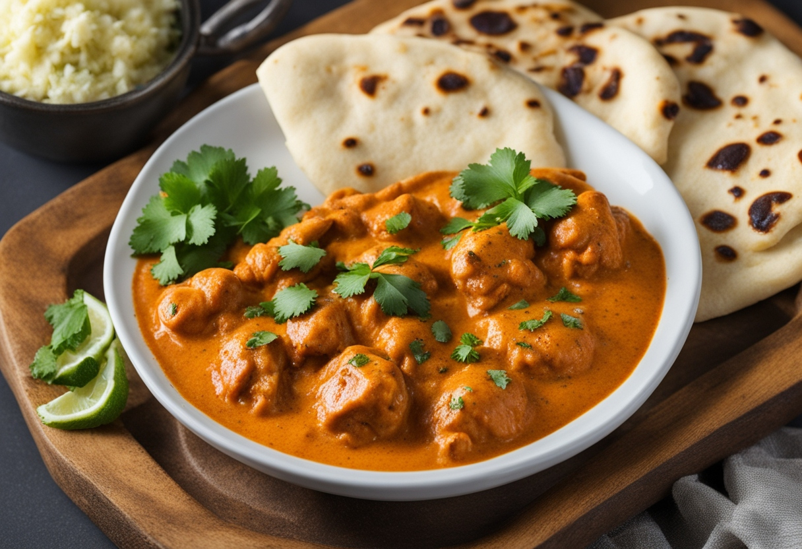

Butter Chicken

Description
Butter chicken, also known as "murgh makhani," is a beloved Indian dish renowned for its rich and creamy flavors that tantalize the taste buds. Succulent pieces of tender chicken are marinated in a blend of yogurt and spices, including ginger, garlic, and an array of aromatic spices such as garam masala, cumin, and coriander. After marinating, the chicken is traditionally cooked in a tandoor oven, infusing it with a smoky charred flavor. The star of the dish, however, is the velvety tomato-based sauce, made with a luscious blend of butter, cream, tomato puree, and a medley of spices. This sauce is simmered to perfection, allowing the flavors to meld together and create a harmonious symphony of taste. Once the chicken is cooked, it is gently simmered in the sauce until tender and juicy, absorbing all the creamy goodness. Served with fluffy basmati rice or warm naan bread, butter chicken is a dish that captivates both the senses and the soul, offering a taste of indulgence and comfort with every bite.
Ingredients
- 1 cup butter, divided
- 1 onion, minced
- 1 tablespoon minced garlic
- 1 can (15 ounces) tomato sauce
- 3 cups heavy cream
- 2 teaspoons salt
- 1 teaspoon cayenne pepper
- 1 teaspoon garam masala
- 1.5 pounds skinless, boneless chicken breast, cut into bite-sized chunks
- 2 tablespoons vegetable oil
- 2 tablespoons tandoori masala
Directions
- Preheat the oven to 375 degrees F (190 degrees C).
- Melt 2 tablespoons butter in a skillet over medium heat. Stir in onion and garlic, and cook slowly until the onion caramelizes to a dark brown, about 15 minutes.
- Meanwhile, combine cream, tomato sauce, remaining butter, salt, cayenne pepper, and garam masala in a saucepan over medium-high heat; bring to a simmer. Reduce heat to medium-low, cover, and simmer, stirring occasionally, for 30 minutes. Stir in caramelized onions.
- While the sauce is simmering, toss chicken with vegetable oil until coated. Season with tandoori masala and spread out onto a baking sheet.
- Bake chicken in the preheated oven until no longer pink in the center, about 12 minutes.
- Add cooked chicken to the sauce and simmer for 5 minutes before serving.